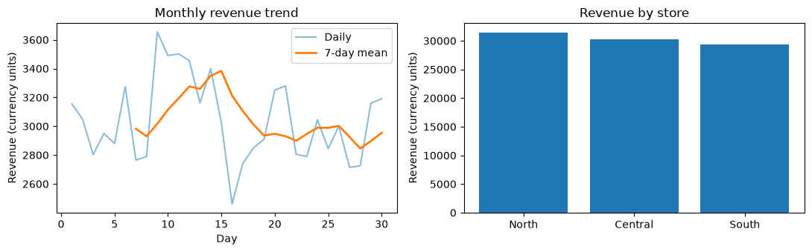

Learn NumPy by doing · Notebook 16
Sales analysis project
A month of store sales, end to end
Capstone project
60–90 minutes
Prerequisites: 00–09; revisit 11–13
Notes · 1 This is the first of two capstone projects. You manage three stores selling four products over 30 days, and you build a small report: revenue per store, the top product and the daily trend. Nothing here is new syntax. The project combines cleaning, broadcasting, aggregation and plotting from earlier notebooks into one pipeline. The cube at right is the data: days stacked as layers, each a store by product grid, with the two missing counts in orange. The dataset is synthetic and prices are fixed, so treat findings as practice, not business truth.
What you will learn
One project, four NumPy skills
1
Clean
Fill missing counts with a per-pair average, and keep the mask for auditing.
2
Broadcast
Multiply a (30, 3, 4) cube by a price vector of length 4.
3
Aggregate
Sum over axis tuples to get revenue per store, product and day.
4
Interpret
Plot with labelled units and state findings with numbers and limits.
NumPy course · 16 Sales analysis project
2
Notes · 2 The notebook's goal is to combine cleaning, broadcasting, aggregation, plots and business interpretation. Each of these was a separate notebook earlier: cleaning in 08, broadcasting in 05, statistics in 06 and windows in 14. Here they meet in one workflow, and the hard part is keeping shapes and totals consistent between stages. Before running each stage, sketch the expected output shape on paper. The worked pipeline is a model; the exercises and the challenge ask you to extend it.
The workflow
Five stages, one data cube
Step 1
Generate
Poisson counts, shape (30, 3, 4), two NaN
Step 2
Clean
Fill each NaN with its pair's mean
Step 2
Analyse
Units × prices, then sums by axis
Step 3
Visualise
Daily trend, 7-day mean, store bars
Challenge
Export
Save to .npz, reload, verify equality
Every stage ends with a check: the expected shape, finite values, and totals that agree however you sum them.
NumPy course · 16 Sales analysis project
3
Notes · 3 This is the map for the whole session. The four solid stages are worked in the notebook's three steps; the dashed export stage is yours, in the independent challenge. Every stage passes the same array forward, so a mistake early, such as treating a missing count as zero, silently flows into every later number. That is why each stage ends with an assertion: the cube keeps shape (30, 3, 4), revenue is finite, and store totals, product totals and daily totals all add up to the same grand total.
Step 1 · Generate the data
Reproducible synthetic sales
rng = np.random.default_rng(2026)
stores = np.array(["North", "Central", "South"])
products = np.array(["Tea", "Coffee",
"Juice", "Water"])
prices = np.array([20., 40., 35., 15.])
units = rng.poisson(lam=np.array([12, 8, 6, 15]),
size=(30, 3, 4)).astype(float)
units[2, 0, 1] = np.nan
units[10, 2, 3] = np.nan
print("Shape:", units.shape,
"missing:", np.isnan(units).sum())
Shape: (30, 3, 4) missing: 2
A seeded generator
Seed 2026 gives everyone the same month of sales.
One rate per product
lam broadcasts along the last axis: about 12, 8, 6 and 15 units a day.
NaN is not zero
It marks a count we never observed. astype(float) makes room for it.
NumPy course · 16 Sales analysis project
4
Notes · 4 The brief: three stores, four products, 30 days. Poisson counts model whole units sold per day, and the rate vector of length 4 broadcasts against the size (30, 3, 4), so each product gets its own average. Poisson returns integers, which cannot hold NaN, so the cube is converted to float before two counts are blanked out. Ask the audience to predict the shape and the missing count before running. Try it: add a fifth product. The rate vector, the price vector and the product names must all grow to length 5, and the shape becomes (30, 3, 5); forget one and broadcasting or the report breaks.
Step 1 · The data cube
Day × store × product
units[2] · day 3
Tea
Coffee
Juice
Water
North
NaN
Central
South
units[10] · day 11
Tea
Coffee
Juice
Water
North
Central
South
NaN
units[2, 0, 1] is day 3, North, Coffee. units[10, 2, 3] is day 11, South, Water. Each day is one 3 × 4 layer; 30 layers stack along axis 0.
axis 0 · 30
Day: one layer each
axis 1 · 3
Store: the rows
axis 2 · 4
Product: the columns
NumPy course · 16 Sales analysis project
5
Notes · 5 Draw this cube before writing any analysis code. Axis 0 is the day, axis 1 the store and axis 2 the product, so units[2, 0, 1] reads as day index 2 (the third day), store 0 (North), product 1 (Coffee). The two orange cells are the only missing counts in 360 entries. Every later question is a choice of axes: per store means collapse days and products, per product collapses days and stores, per day collapses stores and products. Naming the axes now makes those reductions obvious later.
Step 2 · Clean
Impute, but keep the audit trail
Guard first
A pair with no observed day has no mean to borrow, so fail loudly.
Fill per pair
nanmean over days, one average per store and product.
Measure the guess
The mask selects exactly the revenue we estimated.
missing = np.isnan(units)
if np.any(missing.all(axis=0)):
raise ValueError("A store/product pair "
"has no observed counts")
mean_units = np.nanmean(units, axis=0,
keepdims=True)
filled_units = np.where(missing, mean_units,
units)
revenue = filled_units * prices
print("Revenue from imputed entries:",
revenue[missing].sum().round(2))
Revenue from imputed entries: 584.66
NumPy course · 16 Sales analysis project
6
Notes · 6 The cleaning policy: fill a missing count with that store and product pair's average observed count across days. The result is a fractional estimated count, so anything built on it must be reported as an estimate. Notice we never overwrite units: the original array and the missing mask stay available for auditing, and revenue[missing] tells us exactly how much revenue rests on guesses, 584.66 here. Try it: compare the total with np.nansum(units * prices), which simply drops the two missing entries. That total is lower by the imputed revenue, because dropping silently treats the unknown counts as zero sales.
Step 2 · How the fill broadcasts
keepdims makes the means line up
units, missing
(30, 3, 4)
nanmean(axis=0, keepdims)
(1, 3, 4)
np.where(...)
(30, 3, 4)
units[:, 0, 1] → North · Coffee, all 30 days
d1
d2
NaN
d4
…
d30
d2
mean of 29
d4
np.where picks cell by cell: the pair's mean where missing is True, the original count everywhere else.
NumPy course · 16 Sales analysis project
7
Notes · 7 This diagram explains why the one-line fill works. nanmean over axis 0 ignores the NaN and averages the 29 observed days for each of the 12 store and product pairs. keepdims=True keeps that collapsed axis as length 1, giving shape (1, 3, 4) instead of (3, 4). np.where then broadcasts the three inputs together: the (30, 3, 4) mask, the (1, 3, 4) means stretched across all 30 days, and the original counts. Without keepdims the shapes would still broadcast here, because (3, 4) aligns from the right, but keepdims makes the intent explicit and stays correct if you reduce a middle axis instead.
Step 2 · Analyse
Revenue, then three summaries
revenue = filled_units * prices
store_revenue = revenue.sum(axis=(0, 2))
product_revenue = revenue.sum(axis=(0, 1))
daily_revenue = revenue.sum(axis=(1, 2))
print("Revenue by store:",
dict(zip(stores, store_revenue.round(2))))
print("Top product:",
products[product_revenue.argmax()])
Revenue by store: {np.str_('North'):
np.float64(31487.76), np.str_('Central'):
np.float64(30220.0), np.str_('South'):
np.float64(29411.9)}
Top product: Coffee
Prices broadcast
The (4,) vector lines up with the product axis, the last one.
Axis tuples
Name the axes to collapse; the one left over is the answer.
NumPy 2 reprs
Dict values print as np.float64(…); they are ordinary numbers.
NumPy course · 16 Sales analysis project
8
Notes · 8 Revenue is units times price for every day, store and product. Because prices has shape (4,), broadcasting aligns it with the last axis of the (30, 3, 4) cube with no loop and no reshape. Each summary is then a single sum over an axis tuple: drop days and products to get one number per store, drop days and stores for one per product, drop stores and products for one per day. argmax returns a position, and indexing the products array with it turns that position into a name. The notebook follows with checks you should keep in your own work: revenue is finite everywhere, and store totals and daily totals reconcile to the same grand total.
Step 2 · Which axes to sum
Sum away what you don't need
filled_units * prices
broadcast on the last axis
(30, 3, 4)
×
(4,)
→
revenue (30, 3, 4)
.sum(axis=(0, 2))
→ shape (3,), one per store
North
31487.76
Central
30220.0
South
29411.9
.sum(axis=(0, 1))
→ shape (4,); argmax picks Coffee
Tea
Coffee · top
Juice
Water
.sum(axis=(1, 2))
→ shape (30,); day 9 is the best
NumPy course · 16 Sales analysis project
9
Notes · 9 Read each row as: which axes disappear, and which one survives. The first row is broadcasting: a length 4 price vector stretches across 30 days and 3 stores. The store row keeps axis 1 and shows the real totals; North leads at 31487.76. The product row keeps axis 2, and argmax picks Coffee, the most expensive product at 40 per unit even though Tea and Water sell more units. The daily row keeps axis 0; its argmax is index 8, which is day 9 because days are numbered from 1 in the report. All three rows add up to the same grand total, 91119.66, which is the reconciliation check.
Step 3 · Visualise
A trend line and store bars
A 7-day window
30 days give 24 full windows, so the smooth line starts on day 7.
Two views
Lines show change over time; bars compare totals.
Label units
Each y-axis says Revenue (currency units).
weekly_trend = sliding_window_view(
daily_revenue, 7).mean(axis=-1)
fig, axes = plt.subplots(1, 2, figsize=(11, 3.5))
axes[0].plot(np.arange(1, 31), daily_revenue,
alpha=0.5, label="Daily")
axes[0].plot(np.arange(7, 31), weekly_trend,
linewidth=2, label="7-day mean")
axes[1].bar(stores, store_revenue)
print("Best day:", daily_revenue.argmax() + 1)
print("Estimated total revenue:",
round(revenue.sum(), 2))
Best day: 9
Estimated total revenue: 91119.66
NumPy course · 16 Sales analysis project
10
Notes · 10 sliding_window_view from notebook 14 returns a (24, 7) view of the 30 daily totals with no copying; averaging the last axis gives the rolling mean. The x values for the smooth line start at 7 because the first full window ends on day 7: the initial incomplete windows are omitted, not padded. The code is trimmed here; the notebook also sets axis labels, titles and a legend, then calls plt.tight_layout and plt.show. Note the word Estimated in the total: it includes the imputed counts. Try it: write three findings that each quote a number, plus one limitation caused by the missing data, for example that 584.66 of the total rests on two imputed counts.
Step 3 · Read the chart
What the month looked like

Daily revenue peaks on day 9; North has the largest store total, 31487.76.
NumPy course · 16 Sales analysis project
11
Notes · 11 This is the real figure from the notebook run. On the left, the faint blue line is daily revenue and the orange line is the 7-day mean, which starts on day 7 because earlier windows are incomplete. The rolling mean climbs through the second week, peaks around day 15, then settles; single days like the dip around day 16 are smoothed away. On the right, the store bars start at zero, so the small differences between stores look small, which is honest: North, Central and South are within about 7 percent of each other. Remind the audience that this is synthetic data: describe what the chart shows, and keep claims about why separate from what the data can establish.
The idea to remember
Name the axes.
Reconcile the totals.
A data pipeline is trustworthy when every stage keeps its shape, its missing mask and totals that agree however you sum them.
Notes · 12 Pause here. The NumPy in this project is short: one broadcast multiply and a few axis sums. What makes the report trustworthy is discipline: knowing which axis is which, keeping the record of what was imputed, and checking that store, product and daily totals all reach the same 91119.66. Carry this habit into notebook 17 and into any real analysis.
Practice · Exercises
Two exercises on the revenue cube
Exercise 1
Each store's share of total revenue
Expected: shape (3,), summing to 1:
[0.3456 0.3317 0.3228]
store_share = (
store_revenue / revenue.sum())
Exercise 2
Average daily revenue by store and product
Expected: shape (3, 4); North row:
[233.3333 362.7586 220.5 233.]
average_daily = revenue.mean(axis=0)
NumPy course · 16 Sales analysis project
13
Notes · 13 Ask the audience to attempt both before revealing the code lines, which match the reference solutions. Exercise 1: dividing each store total by the grand total gives fractions that sum to one; North earns about 34.6 percent. Exercise 2: a mean over the day axis leaves the store and product axes, shape (3, 4). The check multiplies by 30 to recover revenue.sum(axis=0), which is a neat way to confirm you averaged over the right axis. North's Coffee figure, 362.7586, has odd decimals because one of its days is an imputed estimate, an average over 29 observed days.
Practice · Independent challenge
Report, export and a scenario
Challenge
One report cell, an .npz export, and a Coffee price rise
Report total revenue, best store, best product, missing count and imputed revenue share.
Save the cleaned data and summaries to .npz, reload, and verify equality.
Raise Coffee's price 10% with units fixed, and label that fixed-demand assumption.
Success means
Correct shapes at every stage
Totals that reconcile, before and after export
Plots with labelled axes and units
A clear explanation of the cleaning policy
Both exercise checks print passed
NumPy course · 16 Sales analysis project
14
Notes · 14 This is the export stage from the pipeline slide, and it has no supplied check: write your own. np.savez_compressed stores several named arrays in one file; np.load returns them by name, and np.testing.assert_array_equal proves the round trip lost nothing. For the imputed share, divide revenue[missing].sum() by revenue.sum(). For the scenario, copy the price vector, multiply Coffee's entry by 1.1 and recompute; with units fixed, only Coffee revenue changes, by exactly 10 percent. Say plainly that real customers might buy less at a higher price. Decide the expected results before running, then restart the kernel and run all cells.
Recap
Mask
Impute, but keep the mask to measure the guess.
Broadcast
Prices align with the last axis.
Reduce
The axis tuple decides what survives.
Report
Label units; state findings with numbers and limits.
Up next · Notebook 17
PCA and clustering
Standardization, dimensionality reduction and iterative clustering: the course finale.
Notes · 15 Recap the four takeaways, then point to notebook 17, the second capstone, where the same habits of naming axes and checking results carry a PCA and a k-means loop built from NumPy building blocks. Further reading from the notebook: the official NumPy statistics routines at numpy.org/doc/stable/reference/routines.statistics.html, and numpy.savez_compressed at numpy.org/doc/stable/reference/generated/numpy.savez_compressed.html for the export challenge.